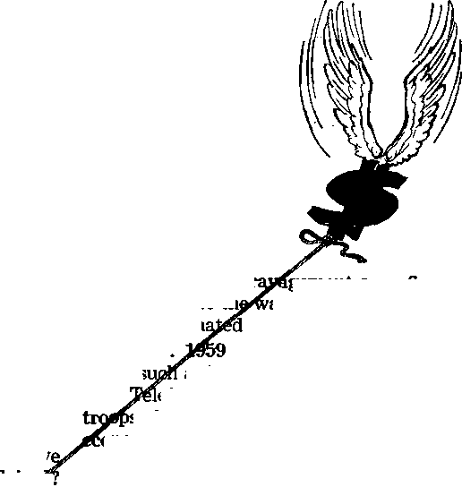
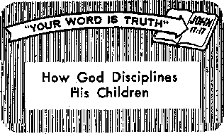

THE MISSION OF THIS JOURNAL
Naw* source* that are able to keep you awake to the vital Issue* of our time* mult bo unfettered by ceniorihip and ie|fl*h Interest*. "Awoke!" has no fetters. It recognlu* facts, face* facts, I* free to publish facts. It is not bound by political ambitions or obligations; It I* unhampered by advertisers whose toes must not be trodden on; It Is unprejudiced by traditional creeds. This journal keeps itself free that it may speak freely to you. But It does not obuse its freedom. It maintains integrity to truth,
"AwakeI" uses the regular news channels, but i* not dependent on them, Its own correspondents are on all continents, in scores of nations. From the four corners of the earth their uncensored, on-the-scenes reports come to you through these columns. This journal’s viewpoint Is not narrow, but is international, it is read in many nations, in many languages, by persons of all ages. Through its pages many Reids of knowledge pass in review—government, commerce, religion, history, geography, science, social conditions, natural wonders—why, its coverage is as brood as the earth and ashjflb heavens.
"Awoke! to exposing hidden foes
and subtle dangers, to championing freticonTfor all, to comforting mourners and strengthening those disheartened by the rat lures of a delinquent world, reflecting sure hope for the establishment of a righteous New World.
Get acquainted with “Awakel” Keep awake by reading r‘Awakel'*
Published Simultaneously in the United Statbb by the WATCHTOWER BIBLE AND TRACT SOCIETY OF NEW YORK. INC. 117 Adams Street Brooklyn 1, New York. U.S.A.
and in England by WATCH TOWER BIBLE AND TRACT SOCIETY Watch Tower House, The Ridgeway London N.W. 7, England
N. H. Knorr. President Grant Suiter, Secretary
Printing this issue: 3,125,000
4d a copy (Australia, Id)
h pabllihsd In the fa I tow Ing 23 lang gages- r (tanlttancM for subscriptions ahnuld be sent to Lhe nlBre in your country. Otherwise send your remittance to London. Notice of exnlrartlon la sent at least two Jbelks
“Await!**
Gemlmeirthly—Afrikaans, Clnyanja, Danish, Dutch, Enc-lish. Finnish, french, Gennan, Greek, Italian, Japanese, Norwegian, PartuffUctt, Spanish. Bveiilnh. Tagaloa, Zulu. Monthly—Ilocano, iDdonealsn, Korean, Malayalam, Polish, Ukrainian.
Yearly subscription rates
Dflfaa for semimonthly editions
America, U.S,, 117 Adams St. Brooklyn 1, N.Y.
Antralla, 11 Beresford Bd.* Strathfteid, N.B.W. 8/-Cannda, 150 Bridgeland Ave., Toronto 19, OnL jl England* Watch Tower nemse,
The Rldseway, London N.W. 7 7 A
New Intend, GUI New North Rd., Auckland, S.W. 1 7/-South Africa, Private Buff, Elandsfonteln, Tvl. T/-Monthly editions cost half the above rales.
before jfiitiscriptlon expires.
CHANGES OF ADDRESS Bfiaild reach us thirty days Wore your moving date. Givi as your old and new ftldrm (if pwlbie, your old iddnu label). Watch Ttwff, Watch Tower Hcih, Tfei Rldpway, Lon-dun N,W. 7, Engiud.
Entered as seonnrl-class matter at Brooklyn, N.Y, Printed In England
The llhla translation used in “Awake!” fa the Nor World Translation of the Holy Scrlphres, When ether translations are wed the following eymhols will appear behind the citations:
,4$ — American Standard Version Dv - Catholic Douay version jtfo — Jarnos Moffatt's version
AT - An American Translation Hia Emphatic DUglott .Ro - JR Bat her ham's yeratoo
AV - Authorised Vertical (1611) JP - JewUb Publication Sec. - Heriscd Standard Version
£)a - J- K. Darby's version Le - Isaac Leese A version Y<? - Robert Young's version
CONTENTS
Can You Enjoy Being a Housewife?
Is Body Build a Clue to Personality? Iff
“Your Word Is Truth"
How God Disciplines His Children
ffir • lafiir*
About to undergo the experience of being hanged, the man on the
ting eccentricities that experience has taught them. This is no easy task, for ball players, like the rest of us, tend to cling to accustomed ways they have learned and solidified through past experience.”
So experience does
gallows said, among his last words: “This will surely be a lesson to me.” Those words, recorded by American journalist Irvin S. Cobb, underscore the fact that personal experience may be a teacher but that it is not the best one.
We dare not, then, place too high a regard on personal experience, thinking we must experience all things, even sin, to acquire knowledge and wisdom. It would not only be fruitless and dangerous to try to experience all things personally, but we cannot be certain that personal experience will teach us correctly. What we learn might have to be unlearned, as Joseph Whitney states in the column “Mirror of Your Mind,” published in various journals such as Pictorial TV view of April 26,1959:
“Most of us have been taught to believe that experience is a good 'teacher, but usually we do not learn as much from experience as we think. Furthermore what we do learn is often bad, and continuing experience usually makes it worse. Big League baseball teams spend tidy sums every Spring helping potential future stars unlearn the faulty pitching, fielding and hit-not necessarily bring wisdom or success. Many persons seem incapable of learning from experience, for they keep on making the same mistakes. Nor have many men taken lessons from the experiences of others. Has this world learned from the experience of wars not to war? Has the disastrous end of many dictators been an effective lesson to modern dictators? “If history repeats itself,” says Bernard Shaw in Man and Superman, “and the unexpected always happens, how incapable must man be of learning from experience!” True it is, as the Bible declares: “There exists a way that is upright before a man, but the ways of death are the end of it afterward.”—Prov. 14:12.
There is no doubt that there is value in the right kind of experience. By experience the public speaker becomes more skilled, just as does the musician, the mechanic and the doctor. The value of a man to an organization, in fact, is, often determined largely by his experience within that organization. But there is no value in experience if we do not have the capacity to learn from it. From our experiences we should leam to distill principles that will help us avoid mistakes and that will help us become more effective in what we are doing.
But if we were to rely entirely on selfdistilled principles for daily living, for coping with the problems certain to confront us in these difficult times, how unhappy we would be! How unhappy the automobile driver who must leam skill as a result of’ many accidents! How unhappy the businessman who must go through bankruptcy to leam efficiency and skill in management! How unhappy the ship’s captain who must learn by repeated wrecks how to avoid the rocks! How pitiable those persons who are never convinced that they can know a thing unless they have experienced it! If we can avoid disastrous personal lessons by studying the experiences of others, why not do so?
But we cannot afford to wait till we build up a vast backlog of personal experience and have had time to analyze extensively the experiences of others. When the question arises, '‘What shall I do?” we need principles by which we can make the right decision. Here we see the wisdom of having inculcated principles that never change, principles that can be learned within a reasonable time, principles that will lead the inexperienced one to success.
Where are such principles to be found? In God’s Word, the Holy Bible. Declares the inspired psalmist: "The law of Jehovah is perfect, bringing back the soul. The reminder of Jehovah is trustworthy, making the inexperienced one wise.” (Ps. 19: 7) That is what makes one wise—taking teaching from Jehovah, for as inspired Elihu said: “Surely it is the spirit in mortal man and the 'breath of the Almighty that gives them understanding. It is not those merely abundant in days that prove wise, nor those just old that understand judgment.” (Job 32:8, 9) We need divine principles.
In the Bible we find principles such as the one stated at 1 Timothy 6:10: “The love of money is a root of all sorts of injurious things.” What misery could be avoided by applying this principle in one’s life! Further, the Bible illustrates divine principles by giving the experiences of others. Thus the disastrous experience of Judas Iscariot illustrates the divine principle on “the love of money.” The Bible abounds with experiences that serve as a warning to us, such as those of the unfaithful Israelites: “Now these things went on befalling them as examples and they were written for a warning to us upon whom the accomplished ends of the' systems of things have arrived.” (1 Cor. 10: 11) Nor does the Bible give merely warning examples; it also gives encouraging examples, experiences of those who came off successfully because of living by divine principles.
Rightly evaluate experience. Do not overrate personal experience. Distill principles from your personal experiences, but also make the experiences of others an extension of your own. Above all, take in knowledge of the life-directing principles found in the Bible. In this way we will not leam hard lessons that could not benefit us, as did the man on the gallows. In this way we may be certain of happiness and suc-‘ cess.* “Happy is the man that has not walked in the counsel of the wicked ones, and in the way of sinners has not stood and in the seat of ridiculers has not sat.. But his delight is in the law of Jehovah, and in his law he reads in an undertone day and night. And he will certainly become like a tree planted by streams of water, that gives its own fruit in its season and the foliage of which does not wither, and everything he does will succeed.”—Ps. 1:1-3.
During the i960 presidential campaign in the United States, much was said about religious bigotry and tolerance. Not the tolerance that allows men to express themselves freely concerning differing opinions, but a tolerance that would silence one in the face of contradictory opinion. There were times when even a passing reference to the Roman Cath-olic Church brought
Why are so many people tolerant about almost everything?
doctrine of tolerance have stronger political ties than religious convictions. Therefore, not wanting to have their religious weakness exposed and their religious susceptibilities shocked, they cry— tolerance! If this cry does not silence the more courageous,
they swing the ax of bigotry to quiet the tongue of anyone who dares to mention the truth. If Christians are to guide, then they must speak out. Far too many persons have been put on
loud cries of bigotry from all sides.
Silent tolerance was demanded only where religious matters were concerned, but there was no semblance of it where political, commercial, social and military issues were involved. In these fields fiery, verbal broadsides were loosed so that truth would triumph over error, but not so in the secluded sanctuary of religion. To challenge religious opinion and dogma was strictly taboo.
Why this silent tolerance only in the realm of religion? Robert J. McCracken, minister of Manhattan’s Riverside church, said: “In nine cases out of ten what goes by the name of tolerance is really apathy. There are too many easygoing Americans who are up in arms against nothing because they have no fixed standards of right and wrong. They do not come out positively and wholeheartedly on the side of anything because, unlike their fathers, they have no robust convictions. Tolerance is a virtue, but it is not the supreme virtue.” Apathy, not a firm conviction, is what cries for silent tolerance. In a great number of cases advocates for this sly, subtle the defensive by what Bishop Fred P. Corson, Methodist bishop of Philadelphia, calls a “false conception of tolerance, which teaches that you must not stand for any position of your own or defend your beliefs.” Christians disassociate themselves from fanatical bigotry, but they do maintain their right of free speech, their right to witness concerning their convictions.
As a rule, modem persons like to think of themselves as tolerant of opposing opinion. Churchgoers are no exception to the rule. For example, Our Sunday Visitor, a Roman Catholic paper, states: “We are convinced that Catholics are the most tolerant of all people. They never hear another organization attacked from their pulpit, while they are taught that they must love every individual, friend or enemy.”
While Catholic churchgoers may like to think themselves tolerant, and without question many are, yet the Roman Catholic Hierarchy does not adhere to or advocate the doctrine of tolerance. The Catholic Encyclopedia, volume 14, page 766, says that the Catholic church “regards dogmatic intolerance not alone as her incontestable right, but also as a sacred duty.” Moreover, it is argued by this authority that since God tolerates no strange gods, the Catholic church “can tolerate no strange Churches beside herself.”
The Catholic church actually teaches that toleration came in only when faith went out. She states that lenient measures were resorted to only where the power to apply more severe measures was wanting. “Tolerance,” says this authority, is the “patient forbearance in the presence of an evil which one is unable or unwilling to prevent.” And when the Catholic church has been in position to prohibit other religions from carrying on their worship, doing so either by law or force, history even in this century testifies that she has done so. The Cincinnati (Ohio) Times Star published this report: “The Evangelical Confederation of Colombia has listed 23 new cases of alleged persecution of Protestants in this predominantly Catholic country, including the murder of a Protestant lay preacher and the dynamiting of a Presbyterian chapel. ... In another serious incident, the report said, a parish priest with a revolver led the mayor and police of La Plata, in the Huila Department, in a shooting attack on a building where Protestant services were being held.” Is that tolerance? If freedom of religion is to be maintained in good and tolerant spirit, then such actions should be unequivocally condemned by Roman Catholics themselves. But such crimes they endure in silent tolerance, which makes them sharers in such cruel intolerance.
Examples of Tolerance
Almighty God Jehovah is the greatest example of tolerance. For thousands of years he has tolerated those who corrupt mankind and who misuse the earth. Some have questioned his being so tolerant with wicked men, workers of lawlessness. But this tolerance on the part of God will have an end; he is not weak in faith or lacking in power. “He is patient with you,” writes Peter, “because he does not desire any to be destroyed but desires all to attain to repentance” and live. But it is not a silent tolerance now. God commanded his prophets to expose wrong. His written Word declares his judgments against lawlessness. And his witnesses in the earth today teach that Word. At Armageddon God’s tolerance of wickedness will end. He will root out the wicked and preserve the righteous as he did in Noah’s day. For “Jehovah is guarding all those loving him, but all the wicked ones he will annihilate.”—2 Pet. 3:9; Ps. 145:20.
Jesus Christ was a tolerant man who engaged in no violent religious crusades. His, however, was not a silent tolerance, for he vigorously exposed false religious doctrine. The zeal of Jehovah consumed him to the point where he entered the temple and threw out all those selling and buying in the temple and overturned the tables of the money-changers and the benches of those selling doves. This was not an invasion of someone else's place of worship, however, for it was his ‘Father’s house.’—John 2: 15, 16.
False religious blasphemies were not tolerated in silence by Jesus. The twenty-third chapter of Matthew contains one of the most forceful denunciations of false religion ever recorded. When a man versed in the Law complained to Jesus, saying: “Teacher, in saying these things you also insult us,” what did Jesus do? Did he change his line to satisfy these men? None of that. Jesus said to the man: “Woe also to you who are versed in the Law, because you load men with loads hard to be borne, but you yourselves do not touch the loads with one of your fingers!” Tolerance did not prevent Jesus from speaking out when truth, righteousness and the name of God were involved.—Luke 11:45, 46.
Further, neither Jesus nor his disciples tolerated the unequal yoking of believers with unbelievers, righteousness with lawlessness, light with darkness, Christ with Belial, God’s temple with idols. Jesus called the false religious sects of his day “yeast” and warned: “Be on the alert and watch out for the yeast of the Pharisees and Sadducees.” “Let them be. Blind guides is what they are. If, then, a blind man guides a blind man, both will fall into a pit.” Not a silent toleration this or an appeal for an interfaith movement; rather, a bold warning to stay clear lest the righteous be swallowed up with the wicked in the ditch of destruction.—Matt. 16:6; 15:14; 2 Cor. 6:14-18.
The Christian congregation was counseled by Paul not to tolerate in silence or in any other way uncleanness in its midst. Christianity was not to be a religion with a split personality, believers on Sunday and workers of iniquity on Monday. Concerning those who refused to conform to Christian principles, Paul admonished: “Quit mixing in company with anyone called a brother that is a fornicator or a greedy person or an idolater or a reviler or a drunkard or an extortioner, not even eating with such a man.... ‘Remove the wicked man from among yourselves.’ ” Christianity was to be exemplified, not by a silent tolerance of wrongdoing, but by a vigorous championing of right principles by word and deed.—1 Cor. 5:9-13.
Christian Tolerance Today
With such strong emphasis and examples set before us, how are Christians to deport themselves in this twentieth century, this so-called age of tolerance in which everything goes? Certainly no differently than the way faithful men conducted themselves in the past. They must fearlessly speak the truth. True, God did commission his ancient nation of Israel to destroy the places of pagan worship and even the worshipers of false gods in the land of Canaan; they served as his divinely appointed executioners. But Christians today have no such commission. Their commission is to preach “this good news of the kingdom” and “make disciples of people of all the nations.” The one appointed by God as executioner now is Jesus Christ. It would be presumptuous for any group on earth to try to take his role, to destroy nonbelievers and their places of worship. Even Jesus Christ must await the divinely set time to take action against the wicked. —Matt. 24:14; 28:19, 20.
It is well to remember that Christendom, despite all her professions, is not an example of Christianity. She is an example of what happens when Christians tolerate the intolerable in their midst, when they water down Christian doctrine and principle in the name of tolerance until it has lost all force. She is an example of what happens to men who fail to speak out for fear of becoming unpopular or being called bigots. Christendom is an image, not of Christ, but of this world. Methodist Bishop F. Gerald Ensley of Des Moines, Iowa, charged that Christendom’s religions have become so much like the world that she is now powerless to change the world. “In our time the world calls the tune, not the church,” he said. “Instead of the church insisting that the world shall be Christian, the world has insisted that the church be worldly.” He gave examples to back up his charges: “Society segregates itself, so we segregate,” he said. "The nation gets into war, the church hurries into uniform. It is the fashion in a social set to drink, so churchmen join in with the world.” After so much worldliness, the only will left is for compromise and tolerance.
Light versus Darkness
Among the true Christian witnesses of Jehovah, however, principle is not lacking. As far as they are concerned, God still calls the tunes according to his divine Word, and they follow. When vital issues arise and there are decisions to be made, Jehovah’s witnesses today answer in the same way the first-century Christians did: “We must obey God as ruler rather than men.” Compromise does not enter their minds. —Acts 5:29.
Jehovah’s witnesses are not about to compromise Christian doctrine, principle or truth for favors or out of fear of being labeled fanatical bigots. They ask no quarter in their fight against satanic error; they give none and they get none. They do have the courage to speak the truth. Religious teachings such as Christmas and Easter, while widely popular among professed Christians, are still pagan and unchristian. This fact Jehovah’s witnesses as true Christians will not fail to declare. Doctrines that represent God as a freak and a fiend, such as trinity, purgatory and a hell-fire where souls are tormented in flames for all eternity, will be vigorously challenged by Christians and exposed as being of demonic origin. Christians will not tolerate in silence such blasphemies against God, neither will they allow religious gambling, clerical hypocrisy and religious warmongering to go unmentioned in the name of tolerance. Jehovah’s witnesses appreciate that God must “be found true, though every man be found a liar.”—Rom. 3:4; Matt. 10:27, 28.
Christendom has permitted the world to call the tunes for her, and she loves to have it so. The world’s darkness has blinded her to the point where she has become intolerant of exposure, intolerant of unadulterated Bible truth, intolerant of gospel preaching that sets men free on the road to life. Tolerance no longer means to her tolerating expression of opinion different from hers; to her it means tolerating differences that must never be vigorously debated. Engrossed with worldly darkness, she cannot see God in the picture. She cannot see the need of letting his truth triumph over error through public discussion, of letting Bible truth be preached even though it divides, as Jesus said it would. Christendom prefers blasphemy against God to error exposure that shocks her vulnerable religious susceptibilities. Like the pupil of the eye, the mind of Christendom contracts as more' spiritual light of God’s truth is poured upon her. —Luke 12:51-53.
Christendom’s worldliness must not entice or discourage the Christian witness in the performance of his duty. He must leam to strike hard with Bible truth, not only at the mind of man, but also at his heart. The wrongdoer must be impressed with the seriousness of his error and be led aright. Fear of wounding a man’s pride should not dissuade the witness of Jehovah from speaking the truth. Better cut him with truth and wake him to his senses and save his life than to tolerate in silence his wrongdoing and see him go down into destruction.
Human salvation is not the only thing that is at stake. God’s name is involved. Jehovah’s witnesses are called upon to champion that name and to vigorously uphold God’s truth against all contradictions. This they must do faithfully without fear until the time when Jehovah himself will arise to put an end to all intolerant blasphemers of that which is right, just and true.
The truth will set you free.—John 8:S2.
HAT’S wrong with being a housewife? Many American women especially shy .away from the title as if it were a bad word. When called upon to state their occupation, a goodly number of them are reluctant to say that they are housewives. And when they finally do own up to it, they do so in an apologetic manner as if they were ashamed of it. Columnist Hal Borland says: “At cocktail parties particularly if there are career women present, she [the housewife] is likely to murmur when introduced, ‘Oh, I’m nobody. I don’t do anything. I’m just a housewife.’ ”
Unhappily, the pride of being a housewife, once great in women the world over, has been waning year after year. The downgrading has been so complete that today the very thought of becoming a housewife sends some women through the rafters, Dr. Rebecca Liswood, executive director for Marriage Counseling Service of gredter New York, says she knows a mother that wears a little red apron with the words “The Hell with Housework” printed across the front in large letters. Authoress Eve Merriam wrote: “Clearly, staying home full-time is not fit occupation for a full-grown woman. What is surprising is not that so many housewives leave home, but that 50 per cent of them prefer to remain housewives.”
Why such distaste for homemaking? Many wives confess that they do not mind the work, what they do not like is to be called a “housewife.” A reflection of this feeling can be seen in a double-spread Acrilan advertisement, which says of a young woman holding a clothesbasket: “She hates her title of housewife, but loves her job.” More than half of the housewives inter
viewed in a survey stated that they did love their jobs and that “housework helps their self-esteem.” But they were quick to add that the title “housewife” gives them an inferiority complex. They complain that the word seems drab, suggesting drudgery and a dull existence, which they do not like.
“Disaffection for the word ’housewife’ may stem in part from the unsympathetic definition given it by some dictionaries,” says the New York Times. “Dictionary ‘X,’ for example, coldly defined ‘housewife’ as ‘the woman in charge of a household.’ This does not even indicate that a housewife may be wedded. The Oxford Universal Dictionary, on the other hand, says generously that a housewife is ‘the mistress of a family; the wife of a householder. Often, a woman who manages her household with skill and thrift, a domestic economist.’ This, especially if one accepts the canny use of the word ‘often,’ ” says the newspaper, “is much nearer the mark.” Thoughtfully R. H. Grenville suggests: “It’s time we found a better word to designate man’s spouse; though every now and then, I know, the average woman feels as though she’s married to a house!”
Serious efforts are now under way to popularize homemaking by glamorizing woman’s position with fancy titles such as “home executive,” “household engineer,” “domestic economist,’’ “household mathematician,” and other high-sounding ear-ticklers. But so far none of these have caught on. And as far as the housewife is concerned, she is still “just a housewife.”
Fruita of Downgrading
Downgrading the position of housewife was bound to bear fruit in time. It is not surprising, therefore, to learn that in a recent nationwide study conducted by the University of Michigan Survey Research Center, when 1,925 young girls of eleven to nineteen years of age were asked about their future plans, 94 percent replied that they hoped to marry someday, but only 3 percent wanted to be housewives!
Homemaking is obviously at a very low ebb these days. Office and factory jobs appear to have the greater appeal. Attractive young girls seem to prefer punch-press operating jobs in dingy factories to homemaking in pleasant surroundings. Why this? What are the reasons for such dim views of being a housewife?
Young single homemakers and married women without children especially seem to feel that being a housewife is unnecessary work. Only one in four single women said housework made them feel useful and important, whereas about 50 percent of the married women said homemaking gave them a sense of achievement. Findings by Robert S. Weiss and Nancy Morse Samuelson for the University of Michigan showed: “With marriage, housework remains a source of feeling of social worth throughout life; but for the single woman, including the woman who has lost her husband, increasing age makes housework more and more likely to lose its meaning.”
Primarily among single girls has housekeeping lost its meaning. Far too many of them feel that nobody thinks anything of a housewife, and that the life lacks importance and thrills. Too often they are right. There is no denying, says columnist Borland, “that the shop talk of wives is not always as interesting as the reminiscences of actresses or lady wrestlers. But few professional career women live a life one-half as exciting or satisfying as that of the ordinary housewife. Motherhood, the art of raising children, is an endless drama, a ceaseless adventure.” It is truly difficult to imagine what could be more exciting or challenging than rearing the next generation. This is the privilege and joy of the housewife. What secular job could possibly be more worth while?
Contrary to the general consensus, it takes brains and a great deal of skill to be a mother and a manager of a good home. Those who look upon housework as simple, unimportant activity have never tried to manage a home. Dr. Liswood emphasizes that “running a home is just as hard and complex as operating a small business. In many ways," she says, “it's harder and more complex! Also, there is more at stake. A good wife must also be a thoroughly competent housekeeper, dietitian, child expert, cook, nurse and food buyer. She must know a great deal about the cleaning of modern fabrics, budgetary matters, school problems and, yes, even machinery. Even in a push-button kitchen, she has to know what buttons to push and which knobs to twirl, and often this isn’t easy!” Housekeeping has its variety, interest and importance, if the ladies would but give it a chance. They certainly would not be bored for lack of things to do.
Why the Dim View of Things?
Kitchen automation is being blamed for some of the negativism among women toward housekeeping. This Week Magazine states: “Push-button kitchens, automatic cleaning equipment and easy-to-fix meals have made mothers feel less important and hence less prideful.” Not experiencing any personal challenge or triumph, housewives find it hard to reflect joys they do not feel —joys that once aroused the desire in daughters to want to copy their mothers as homemakers.
However, Dr. Liswood says, women have no reason to feel useless because of automation. “Women must realize that as their part in the physical side of the job shrinks, the managerial role of the homemaker becomes increasingly significant.” She states: “They should understand that the removal of drudgery is a blessing, giving them time to attend to other factors such as child rearing, nutrition, good family relations and real management.”
Despite all the gadgets and modem conveniences in the up-to-date home, many housewives complain that the work-load is still much too heavy, and that housework is harder than holding down an outside job. Their growing daughters agree with their mothers and there is some scientific support for their plaint.
Scientific measurements show that household chores require as much energy as some heavy male occupations. A woman ironing or mopping a floor, for example, exerts more energy than a bricklayer. Making beds takes more effort than shoe repairing. It takes more out of a housewife to beat a carpet than to push a wheelbarrow with a 115-pound cargo. Wringing out wash or hanging it is more taxing than plowing with a tractor. Little wonder a woman that markets, cooks, cleans and cares for husband and children is tired at the end of the day. Some of them do outside work besides!
Many authorities are urging housewives to break their kitchen chains and to get rid of their cooped-up feeling by participating more fully in civic, economic and political life. Millions of women are heeding these calls, but they are not happy. Says This Week Magazine: “Their natural instincts keep turning them homeward. They develop strong guilt feelings about neglecting their families, while still yearning for brighter vistas outside.” Because of their makeup, it is almost impossible for women to achieve happiness to the full apart from being housewives. Therefore, something ought to be done to make the role of the housewife more attractive. But what?
Recapturing the Joys of Homemaking
Perhaps one of the first things to do is to make woman’s load lighter. Anne Jessup has come up with this suggestion: “Why don’t we launch a campaign to convince young grandmothers and able widows that they ought to volunteer—for good wages—to help younger women? The stigma of being a servant could be removed, and in every respect our society would be strengthened.” She believes developing a new occupation called “household helper” or something of the kind would be a giant step in the right direction.
Another suggestion offered is that girls be trained to be good wives, mothers and homemakers. This training should begin in the home with the mother setting a right example. Dr. Liswood says: “If a mother takes pride in running a well-managed home, if she believes she is undergoing a richly rewarding experience and glows with this feeling, the battle is more than half won. On the other hand, if her home is poorly run, if the meals are unimaginative, the rooms untidy, the marketing haphazard, the finances mixed up and her grousing loud, clear and constant, the daughter may well take a dim view of the entire setup.” So a good example in the home is all-important.
There must also be a cultivating of a right attitude toward housework. So much dissatisfaction can be traced back to the belief that housework is undesirable. If a housewife believes her work is dull, it will appear that way to her, regardless of the exciting things that take place in the home. If she believes that work is an evil to be done efficiently only because that means it can be done quickly and got through with, then, even though her home may be efficiently kept, it will not bring her pleasure and it will not reflect the warmth and love that homes should. If, on the other hand, the housewife loves her work for itself as well as for its results, she will receive great joy from dressing her children, from feeding them, from waxing the floors and seeing that the home is lived in. Each little thing she does about the house will have a rewarding effect upon her.
Doing things for the love of the family and not just because they have to be done makes all the difference in the world. A housewife can cook for the love of it, for the challenge that it presents or because it relaxes her, but she receives her greatest pleasure if she cooks because of her love for the family. Her love prevents cooking, baking and housekeeping from becoming commonplace—routine. She will not be satisfied to throw together whatever she has on hand and in any form and without imagination. Her table will be set with dishes, glassware, and perhaps fresh flowers, as if it were a special occasion. Her meals are tasty, and her salads colorful and imaginative. She makes even her stews seem elegant. The “oohs” and “ahs” and the love of her family are her reward. Rise Stevens, Metropolitan opera star, said: ‘‘Whenever a cake turns out just right, I feel as if I’ve just given a wonderful performance.” But she added that she feels her best when she cooks to please her husband and child. “What a wonderful feeling it is to see them take second and third helpings.” To be with the family is the “most important part of life,” she says, “as it must be to every other woman.” Surely a woman who loves her family dearly finds being a housewife the most enjoyable work in the world.
ARTICLES IN THE NEXT ISSUE
£ Light, Crime and Corruption.
• Why Poison Your Mind?
Fascinating, Versatile Fabric—Fiber Glass, Miracle of the Snowflake.
Loving one’s family also calls for many sacrifices. It calls for the giving of oneself willingly. Dr. Walter C. Alvarez, emeritus consultant in medicine, Mayo Clinic, said: Frequently husbands, because of the importance of their work, have to neglect their wives. Then it may help the women to pick up their Bibles and read how the hands of Moses had to be held up before a battle was won. (Ex 17:8-12) “Many a time I have said to a disgruntled wife: ‘Your job is a big one and an important one—it is to hold up your fine husband’s hands. Thus, you can have a share in his work, and a proud share. How much better it is to help him in this way than to stand off and complain that your life seems lonely and empty.’ ”
Such a loving, unselfish attitude toward husband and family is not only desirable and important but one of the most precious gifts that a mother can give her daughter today that will help her to become and enjoy being a good wife tomorrow.
CGT AST week London's gold market sounded a warning > that was heard around the world, a rush to exchange dollars for gold sent its price up to $41 an ounce . . . Central bankers are finding it hard to fall asleep at night.” Thus reported Business Week, October 29, 1960.
What had happened? The tide was turning against Uncle Sam, In addition to his loans and expenditures for World Wars I and n, Uncle Sam has felt it is duty to underwrite the free world’s fight against communism, pouring out $73 billion since 1945 in foreign aid alone. It may all have been well meant, but was it well advispd? And judging by the many reports re ed,
it is pertinent to ask, To what e these billions squandered wa
t were ully?
other na-
Further, as Uncle Sam ons to get back on their financial feet, they not only began to take over his foreign markets but to outprice him at home. As a result, during the past three years he has paid out a total of 511.5 billion more than he received. Highlight-ing the irony Of this ■ situation are the comments of a New York Times financial editor on the money Germany loaned to Greece at 6 percent: “So goes the incredible financial miscarriages of the postwar period. The war victor [U.S.] pays reparations to the loser [Germany] by forgiving debt. The loser lends out the forgiven debt capital in the land he ravaged [Greece]. The victim of the r cent interest to th
of capital don Thus in
ports, s
and
by the war victor.” Uncle Sam spent on im-
gement pays 6 per-
ar ravager for the use
as Volkswagens, Leika cameras efunken radios, $15 billion; on s abroad and on foreign military and onomic aid, $6.6 billion; on foreign investments and travel abroad, $6 billion. All together, he spent $29,6 billion abroad but received only $25.8 billion, leaving a deficit of $3.8 billion. In 1958 the deficit was $3.4 billion, in 1960 at least $4.3 billion.
Obviously, such adverse balances cannot go on indefinitely. After all, Uncle Sam’s gold supply is limited; it has already dropped from a peak of $25 billion to $18 billion. Of this amount his own law requires that $11.6 billion be held as a 25-percent support for his internal financial structure,, to back his Federal Reserve notes. This leaves him but $6.4 billion with which to pay the claims that nations and individuals outside the United States have against him, and those claims amount to well over $20 billion.
True, aside from the United States, only Belgium, El Salvador, Switzerland and the Union of South Africa carry gold reserves to back their own currency. And Great
Britain has only $1 billion of gold while having claims against her of $4 billion, a ratio of one to four. However, Great Britain has deliberately kept this ratio as good business, while Uncle Sam’s unfavorable ratio is due to circumstances apparently outside his control and therefore his unfavorable ratio may well get worse; and that it will if the present rate at which gold is leaving his coffers keeps up. (Incidentally, the gold does not actually leave the United States, it merely gets shifted from one room to another in the Federal Reserve Bank in New York city.)
What Can Be Done About It?
There are a myriad conflicting remedies, according to Fortune, 1960; the reason for this being that there are valid objections to all of them. Thus one leading banker recommends scrapping the 25-percent gold reserve requirement and thereby freeing $11.6 billion of gold. But another states that this would be merely removing the brakes from a locomotive that is already speeding too fast. Obviously, unless the trend is reversed, such a step would only delay the crisis, not eliminate it.
International bankers have gotten together and agreed to lower the interest rates in certain European financial centers so as to lessen the temptation for money to leave the United States because of the low interest rate there. But this device has amounted to no more than “a flea bite on an elephant,” according to one New York Times writer.
The one step or measure that many leading economists insist is the most imperative, but from which Uncle Sam shrinks the most, is getting his financial affairs in order. His debt ceiling has steadily risen until today it stands at $290 billion. The interest charge on that alone is staggering, not to say anything about reducing it. Uncle Sam’s annual expenses have risen from $3 billion in 1930 to $9 billion in 1940, to $40 billion in 1950, to almost $80 billion in 1960. During about the same time Uncle Sam has taken for his Share of the gross national income eVer mofe—from 10 to 20 to 31 percent.—Taxpayer’s Dollar, July, 1960.
But apparently it is expecting too much of politicians that they take wise and firm measures; it is far more popular to keep wasting at the bunghole while saving at the spigot. And so Eisenhower, on November 16, 1960, issued a directive to certain of his cabinet members requiring them to cut down expenses abroad in one way or another, which by the middle of 1962 should amount to $1 billion a year. This directive, long overdue, apparently was not issued sooner because of the effect it might have had on the election.
Another step being taken but which has borne little if any fruit is that of asking West Germany, France and the United Kingdom to take over a share of the cost of keeping United States troops in Europe. To this end Treasury Secretary Anderson and Under Secretary of State Dillon visited the capitals of these countries in the latter part of November. However, where they had hoped to achieve most, in Bonn, they accomplished practically nothing. In spite of her present favorable gold balance, West Germany would not raise taxes or float a loan to contribute $600,000,000 a year to pay for United States troops.
Regarding this, D. H. Lawrence wrote in the New York Herald Tribune, November 25, 1960: “They simply couldn’t accept the fact that the great United States would have to ask West Germany and other European countries for any help. But, as has often heen said, pride goes before a fall and the time had come to face up to the true state of affairs and let the world know that the dollar will be in jeopardy unless co-operauon is rortncoming from Western European governments.”
Among other steps that Uncle Sam might have to take to save his dollar is to restrict travel abroad as well as lower the value or the amount of goods Americans can bring home duty free. Especially would cutting down his troops abroad help; which is what Treasury Secretary Anderson warned Bonn that the United States would do to save her dollar. Uncje Sam could also cut down on foreign military and economic aid, but what effect would such a step have on the cold war? The State Department would shudder to think of taking such a step!
Still other measures that Uncle Sam could take to restore his balance of pay* ments, to have his income equal his expenses, are the limiting of investments abroad by Apiericans, the limiting of the floating of foreign loans in the United States, and the limiting of imports. All such measures would go against Uncle Sam’s idealism, but in time of stress something has to give.
More Drastic Monetary Surgery
More drastic than any of the foregoing would be a gold embargo—to forbid any gold at all to leave the United States. While other nations have resorted to this device when financially embarrassed, their mone-' tary unit was not the world standard as is the dollar.
Most drastic of till would be the devaluation of the dollar, in expectation of which the rush to exchange dollars for gold started last October. In view of the fact that gold has been selling for $35 an ounce for the past twenty-seven years, when everything else has soared in price, it could with consistency be raised to S70 an ounce. But not without catastrophic reverberations. Why not? Because even though it is claimed that gold is merely a commodity, it is more than that; it is a monetary rule or gauge, by reason of its price being pegged at $35 an ounce.
Thus today ever so many nations have been keeping dollars instead of gold as a matter of convenience because the two are interchangeable. But should gold soar to $40, $50 or even $70 an ounce, all those holding dollars would lose proportionately. This is why we are told that today “foreign bankers are keeping a sharp eye on the U.S. economy.” Just how much is involved in What happens to the dollar Ludwig Erhard, Germany's Economics Minister, underscored when he stated: “If the sun, the dollar around which other currencies revolve, starts to move, which God forbid, the consequences would be unthinkable.”
' What the future holds out for the Western world's monetary system remains to be seen. Will the new administration at Washington deal with the problem with more realism? The long delay in dealing with it because of the elections was inexcusable. On the other hand, the Frankfurter Rundschau, one of West Germany’s leading newspapers, in commenting on the course taken by Bonn, observed that “bolstering the weakening dollar means protecting the German mark as well. . . . It’s possible that later it may be even more expensive to protect the United States currency.”
Having placed its confidence in material wealth, the world is in a sad plight. Truly, “the love of money is a root of all sorts of injurious things.”—1 Tim. 6:10.
IS IT possible to determine a person’s temperament by his body build? Many studies, have been made in recent years of the relationship between personality and body build. The results have deeply impressed many persons. But first of all it should be stated that the conclusions reached are controversial. Some authorities regard them as highly valid; others say the results offer only very general criteria. None-, theless, an examination of the results will prove interesting and perhaps furnish some help in the matter of understanding why people are as they are.
The combination of weight and height of humans results in various builds or physiques that have been generalized into three divisions: (1) The broad build with relatively short limbs, (2) the medium or muscular build, and (3) the thin and tall build. The German psychiatrist, E. Kretschmer, was led by his work with mental patients to develop this threefold physical classification.
Many authorities opposed Kretschmer’s views, saying that it was not possible to classify most people Into any of his three groupings with any degree
a,Chi&
Pe^jonofiity
of accuracy. Kretschmer’s views underwent refinement by Dr. William H. Sheldon, now director of the Constitution Laboratory, College of Physicians and Surgeons, Columbia University, New York. Dr. Sheldon published the results of his more than ten years of research in the volumes The Varieties of Human Physique and The
Varieties of Tempera- . ment. His latest work is the volume Atlas of Men, which contains numerous pictures and descriptions relating to eightyeight classifications of body builds.
Obviously Dr. Sheldon does not try to St everyone into three physical groupings, but he does maintain that some of each of three basic components are found in everyone; the relative amounts are highly variable. Some persons are said to have a fairly even
balance between the three primary components, but most persons are usually predominant, at least slightly, in one. Then again many persons are markedly predominant in one of the three basic components. Dr. Sheldon's theory is that a person’s body build can be drastically altered by factors such as disease, gluttony or malnutrition but still remains basically the same.
The three basic components of body build are said to be (1) En'domorphy, (2) Mes'omorphy (MACE-oh-morfi) and (3) Ec'tomorphy. Dr. Sheldon’s studies have led him to believe that there is a high correlation between temperament and these three primary components. This is said to be especially perceptible when there is a high degree of one of the com-ponets. Following is a very general description of the three primary body-build components, together with a few of the typical personality traits, according to the theory:
Endomorphy: Digestive Organs
When endomorphy predominates, it is said that the digestive viscera are highly developed, the endodermal layer having developed chiefly into the digestive apparatus. The person high in endomorphy tends to have good digestion and to put on extra weight in middle age. The face is round, the abdomen is bulkier than the chest and the limbs are comparatively short
The person high in this primary component is said to be characterized by a love of sociability. He is seldom bothered with tenseness but is able to relax better than other persons; in fact, the arms, as Dr. Sheldon puts it, "often show a limp relaxation like that of a seal’s flipper.” There is extraordinary love of food and a genuine fondness for people. The person is generous, has an evenness of emotional flow, great tolerance and comfortable acceptance of customs and situations. Sleep comes easily and sleep is deep.
Mesomorphy: Bone and Muscle
When this primary component predominates, the person is said to have an athletic build, with broad shoulders and trunk, good all-around muscle development. The chest is larger than the abdomen, and the limbs, whether long or short, are strong. The person is hard, firm, upright and relatively strong and tough.
The person high in the mesomorphic component is said to possess vigor, push and assertiveness. He abounds with tremendous energy and so is a real doer, a person of action. The dynamic executive who gets things done is said to be high in bone and muscle development. There is a liking for exercise and, as Dr. Sheldon phrases it, “genuine pleasure in participation in dangerous and strenuous undertakings.” The person may enjoy dangerously competitive athletics, mountain climbing, deep-sea diving, exploration, and so forth. There is no chronic fatigue, and the individual seems to be able to get along with one fifth to one third less sleep, than other people; energy is quickly available —a source of wonderment to persons high In other body builds.
There is also great enjoyment in leadership, “a consummate willingness to assume responsibility.” In getting things done the person highly mesomorphic may seem, although not deliberately cruel, “ruthless in the sense that he is oblivious to purposes or wishes that conflict with his own.” The person often makes decisions immediately. There is spartan indifference to pain and general overmaturity of appearance, there often being a striking manliness or womanliness about the appearance.
In women this component is predominant in greatly varying degrees. “The term ‘bustling,’ ” says Dr. Sheldon, “seems to apply excellently to females who are highly endowed with this trait.”
Ectomorphy: Skin and Sense Organs
When ectomorphy predominates, the person is tall, lean, long-necked, narrowchested with narrow shoulders, hips and face. The body, in comparison with the other two types, is fragile and delicate, there being only slight development of muscle and visceral and bone structures. This component represents predominance of skin and sense organs and nervous system.
Among those high in ectomorphy there is frequent tenseness, unrelaxability, overly fast reactions and self-consciousness because of what is called ‘‘biological extroversion.” (Endomorphic individuals are said to have biological introversion with a resultant converse mental extroversion.) The ectomorphic type is more easily fatigued than others, since muscles are long and slender and the digestive tract is poorly upheld. More sleep is required than for those high-in the other two builds. There is frequent inability to gain weight no matter how much food is eaten. Because of a small stomach the person prefers four or five small meals a day rather than the conventional three. The Individual does not gravitate to social gathering. Solitude is enjoyed; he is thus a good student, likes ideas and likes to study. Though often brilliant, the person may not do as well at rote learning as others. There is a varying degree of emotional restraint, although the person may not feel he is secretive of his feelings.
“The diagnostic hallmark,” says Dr. Sheldon of a markedly ectomorphic individual, “lies in the behavior of the individual in the presence of a person whom he needs to please—ideally his employer or a woman who has not yet accepted him. If he has this trait predominantly, he is at his worst in such a circumstance.” There is also said to be hypersensitivity to pain and insect bites, poor sleep habits and a youthful intentness of manner and appearance. There is emotional and mental versatility.
So different are the personality traits belonging to each of the three primary components of body build that Dr. Sheldon contends: “It is conceivable that constitutional characteristics can some day be diagnosed by educators with sufficient accuracy to justify establishment of two or possibly several quite different kinds of academic teaching procedure.”
Each type is said to contribute valuable qualities. It is- said, for example, that former president of the United States Franklin D. Roosevelt (mesomorphic build) was strongly influenced by Louis Howe (ectomorphic build) and James Farley (endomorphic build), each contributing wholly different but equally important qualities.
'Difficult and Inconclusive
Though there are a number of anthropologists who champion the Sheldon theory (even suggesting jobs for men according to their physiques), others take a dubious view. Noted anthropologist Ashley Montagu writes in his recent work Human Heredity:
“Studies have been made in recent years, but the results have been quite inconclusive in spite of all claims to the contrary. Even the body types or somatotypes are quite arbitrarily standardized types. It is impossible to emphasize sufficiently the fact that all such studies are extremely difficult and must be viewed with the greatest caution. . ..
“Sheldon and others before and since have attempted to discover whether there is any relationship between body types and temperament. It is generally agreed that they have failed to do so. The riddle of physique and temperament is one that bristles with unsolved problems. It is also complicated by the fact that body type changes with different ages. . . . The fact is that the more measurable traits that are included in any attempt to group men together, the more strongly emphasized does the essential individuality of the person become.”
In a similar vein, Amram Scheinfeld writes in the book You and Heredity: “How close the Kretschmer or Sheldon classifications come to establishing a direct relationship between body build and temperament is still debatable. . . . With normal persons, even if average Correlations do exist between body builds and temperament, one must be extremely cautious about applying them to individuals without taking note of all the exceptions and of all the other factors that contribute to personality development.”
"New Personality”'Despite Body Build
Other factors indeed affect personality, the most powerful of which are the operation of God's holy spirit and the accurate knowledge of God’s holy Word. The Bible shows that a "new personality,” with its assemblage of characteristics marked out by God, is not only possible for a Christian but obligatory. “Put on the new personality which was created according to God’s will in true righteousness."—Eph. 4:24.
Thus if a person high in what is called endomorphy should have the tendency to love sociability and food, then by reason of the “new personality” with its self-control he will never become weighted down with excessive socializing, eating, drinking and love of physical comforts, wasting precious time and dulling mental faculties.
And if mesomorphic persons do have the tendency to insist on their own way, they, too, can become balanced by putting on the “new personality,” because ‘love does not look for its own interests.’ (1 Cor. 13: 5) They will seek to do all things Jehovah's way. And if such persons do have the tendency to dangerous undertakings, then by reason of the accurate knowledge of God’s Word, they show the spirit of a sound mind and do not risk injury unnecessarily to their bodies that are dedicated to doing the divine will.
And If ectomorphic persons do have the trait of self-consciousness or shyness, preferring solitude, then by reason of God’s spirit, such persons become willing to leave the privacy of their homes to talk to others about God’s kingdom. They guard against an unbalanced studiousness—always taking in knowledge but never giving it out to others.
According to the Sheldon theory, it might be diffcult for persons of different body builds to understand the temperament traits belonging to others. “Each extreme appears to be offensive to the other,” he says. From the standpoint of the ectomorphic person, the endomorphic lover of sociability and conviviality might be a time waster; on the other hand, the endomorphic person, as well as the mesomorphic one, might view the less talkative, less social and less aggressive ectomorphic individual as “a dark and suspicious person.” Even if Sheldon’s theory is a questionable clue to personality, we can see magnified the wisdom in God’s command: “Do not hurry yourself in your spirit to become offended, for the taking of offense is what rests in the bosom of the stupid ones.” Rather “continue putting up with one another.”—Eccl. 7:9; Col. 3:13.
Instead of being overly concerned about. the temperament of others, the Christian does well to make certain that he himself is cultivating the fruitage of God’s spirit. For each Christian is responsible before God to “put on the new personality”—regardless of body build and any related or Unrelated temperament traits.
la tarn off, the jaws remaining in the flesh, and these must be detached separately. The whole drama is enacted in the darkness of the night by the light of the lantern held by my wife. At last the apts move on. They cannot stand the smell of the lysol Thousands of corpses lie in the puddles."
TRAVELER ANTS
€. The following account is from The Animal World of Albert Schweitzer: "Serious enemies are the notorious traveler ants, which belong to the genus Dorylua. We suffer a great deal from them. In their great migrations they travel five or six abreast in perfectly ordered columns. I once observed, near my house, a column that took thirty-six hours to pass! . . . Usually three or four independent columns march along one beside the other but from five to fifty meters apart. At a particular moment they disperse. How the command is given we do not know. But in a trice a huge area is covered with a black swarm. Every living thing
. found on it is doomed....
fl "Our house lies on one of the great military routes of the traveler ants. Usually they swarm at night. A scratching and a peculiar clucking of the hens warn us of the danger. Now no time must be lost. I spring out of bed, run to the hen house and open it. Hardly have I opened the door when the hens rush out; shut in they would be the victims of the ants. The latter creep into the nose and mouth of the hens until they are stifled. Then they devour them until in a short time only the white bones remain. Ordinarily it is the chickens that fall victim to the ravagers; the hens are able to defend themselves until help arrives.
fl, "Meanwhile my wife snatches the horn from the wall and blows it three times. This is the signal for N’Kendju, helped by the active men in the hospital, to bring buckets of water from the river. The water is mixed with lysol, and the ground around and under the house sprinkled With it. While this is going on we are badly mistreated by the warriors. They creep up on us and take bites out of us. I once counted almost fifty on my body. The animals bite so firmly with their jaws that one cannot pull them off. If one pulls at them, the body
THE JACK RABBIT
fl “As the sun was going down,” wrote Mark: Twain in Roughing Zt, “we saw the first specimen of an animal known familiarly over two thousand miles of mountain and desert—from Kansas clear to the Pacific Ocean—as the ‘jackass rabbit.' He is well named. He is just like any other rabbit, except that he is from one-third to twice as large, has longer legs in proportion to his size, and has the most preposterous ears that ever were mounted on any creature but a jackass. When he is sitting quiet, . . . his majestic ears project above him conspicuously; but the breaking of a twig Will scare him hearty to death, and then he tilts his ears back gently and starts for home. All you can see, then, for the next minute, is his long gray form stretched out straight and 'streaking it’ through the low sagebrush, head erect, eyes right, and ears just canted a little to the rear, but showing you where the animal is, all the time, the same as if he carried a jib.
fl "Now and then he makes a marvelous spring with.his long legs, high over the stunted sagebrush, and scores a leap that would make a horse envious. Presently, he comes down to a long, graceful ‘lope,’ and shortly he mysteriously disappears. He has crouched behind a sagebrush, and will sit there and listen and tremble until you get within six feet of him, when he will get under way again. But one must shoot at this creature once, if he wishes to see him throw his heart into his heels, and do the best he knows how. He Is frightened clear through, now, and he lays his long ears down on his back, straightens himself out like a yardstick every spring he makes, and scatters miles behind him with an easy indifference that is enchanting,"
Papyrus and the
Early Christiana
Papyrus is one of the earliest forms of paper and is, made from an Egyptian water plant. Describing how papyrus paper was made, Sir Frederic Kenyon said: “The pith of the stem of the papyrus plant was cut into thin strips and these strips were laid side by side together, vertically, in the form of a sheet of paper. Over this layer an-
HOW would you like the thrill of acquiring papyrus manuscripts dating from the early second to fourth centuries A.D., manuscripts that are portions of the Holy Bible? This was the experience of Sir Alfred Chester Beatty; and through facsimile copies he has made them available to Bible lovers the world over. Some of the originals can be seen in the Chester Beatty Library at Ballsbridge, Dublin,
Where and how did it all begin? In Egypt, near Aphroditopolis, on the opposite side of the Nile. Some natives dug up a number of jars containing papyrus books. In 1930, Chester Beatty, a copper magnate of Dublin, bought'most of these papyri, though some now belong to other owners, such as the University of Michigan. When these books were deciphered and their contents announced in November, 1931, scholars were astonished. Here was a group of eleven papyrus codices written by different scribes over a number of years. These formed part of a Greek Bible containing some of the Greek and Hebrew Scriptures. They have been described as the greatest event in the history of the Greek Bible since Tischendorf’s discovery, in 1844, of the Codex Sinaiticus. other was placed horizontally, and the two layers were joined together by a sort of glue of which the water of the Nile was-supposed to be a necessary constituent. The layers were put under pressure and then dried in the sun, after which they were polished to remove any unevenness of surface, when the material was ready for use.”
When a person, such as an early Christian, used papyrus to make a codex or book, he would take a sheet twice the width of a page and fold it to make two leaves or four pages. Often he would lay one sheet on top of another to form a quire. We can imagine a Christian’s using his initiative and experimenting in various ways to make a book. Sometimes a codex would be made of one quire of perhaps a hundred leaves. It might have been a bit awkward to handle, so the next time he might make the codex with a number of quires. The use of quires of eight to ten leaves was finally adopted. The twelve Chester Beatty codices show examples of all kinds.
What a flash of insight these codices give us into the dynamic energy of the early Christians! Because they wanted to serve God well, they keenly desired to be familiar with the text of the Bible. Up until the early second century the copying of the Bible had been on rolls. This meant that no work that was materially longer than one of the Gospels Could be included in a simple role. Imagine having to carry sixty-six rolls or more to read the Bible to people! Now at least by the earlier part of the second century, the work of putting the Bible into codex or book form began. How much easier to handle and how well suited to the needs of Christians! It was characteristic of their zeal and spirit that they pioneered the art of codex manufacture. The Greek and Roman scribes of that time, in writing classical literature, kept on using the papyrus roll until the earlier part of the fourth century, when vellum codices began to be made. Obviously, in aiding others to know these worldly works, they did not feel the same urgent need as the Christians did in teaching others the Bible!
Before the Chester Beatty papyri came to light it was thought that the Gospels were circulated separately until vellum began to be used. However, these documents give proof of the existence, in the third century, of a codex containing all four Gospels and the book of Acts; they show that Christians used the codex at least by the early second century.
The Chester Beatty Greek Biblical papyri have been carefully mounted under glass by Doctor Ibscher.of Berlin and studied by Sir Frederick Kenyon. While, in general, the writing of these manuscripts is neat and clear and often the work of accomplished scribes, the noncanonical writings are poorly written.
Importance of Chester Beatty Papyri
Here, then, is a Greek text more than a hundred years older than the famed Codex Vaticanus and the Codex Sinaiticus. Let us note some points of interest, illustrating the value of the Chester Beatty papyri.
Genesis: hbr many years there had been no earlier manuscript of Genesis than the Alexandrine manuscript of the early fifth century and the Berlin papyrus, which is badly mutilated. In the Vatican manuscript the whole of Genesis up to chapter forty-six, verse twenty-eight, is missing. Even Tischendorf, in 1853, on a revisit to St. Catherine’s monastery at the foot of Mount Sinai, was unable to recover more than a tiny scrap with a few verses of Genesis on it. So Bible students were happy to learn that, among the Chester Beatty papyri, there is a copy of the book of Genesis, with the exception of the first eight chapters and the last four. “There are,” said Sir Frederic Kenyon, “no substantial variations in the narrative.”
i Numbers and Deuteronomy: This codex is the oldest manuscript of the collection and dates back to about A.D. 150, about fifty years after the death of the apostle John. Substantial portions of thirty-three leaves and many fragments have been found from a book of likely two hundred and sixteen pages. No doubt this scribe was a skilled professional, possibly a Christian. His work is one of the earliest extant codices and, next to the Dead Sea Scrolls, it is one of the earliest extant Biblical manuscripts.
Isaiah and Jeremiah: In the collection there are portions of thirty-three leaves of Isaiah out of a codex of about one hundred and four leaves. These were written in a stylish hand about A.D. 250. Small portions of two leaves of Jeremiah, written in the second or early third century, have also been found.
Ezekiel, Daniel and Esther; These are all found in one codex, probably of one hundred and eighteen leaves. It was written by two scribes likely in the first half of the third century. The book of Daniel is partlculary important as it contains the unrevised Septuagint text, which was previously known only in a late Greek copy and in a Syriac translation. It is convincing proof of the divine preservation to find that, except as to the relative order of two episodes, the text of this manuscript is substantially sound.
Acts and the Gospels: This codex, written shortly after A.D. 200, contains parts of all four Gospels and the book Acts. Imagine being in London when this treasure first arrived. What is this? Just a lump of papyrus made up of a number of small leaves. Imagine the painstaking care and skill that will be required to carefully divide and sort out these fragments and mount them under glass. When the second parcel arrives it has portions of the Gospels of Luke and John in a much better state of preservation. It is found that this codex is of the early third century. So it carries back a century from the fourthcentury vellum manuscripts the proof of the substantial integrity of the text.
Paul’s Letters: This is an almost complete copy of Paul’s letters, and it is at least a century older than the Vatican and Sinaitic codices. It is of the early third century and may even belong to the second century. This manuscript gives proof that the early Christians accepted the book of Hebrews as part of Paul’s epistles. It contains his letters in this order: Romans, Hebrews, First and Second Corinthians, Ephesians, Galatians, Philippians, Colos-slans, and First Thessalonians.
Revelation: This codex was written about A.D. 275. It has ten leaves out of a possible thirty-two. It is important, as it is by far the earliest extant manuscript of Revelation.
Speaking of the textual importance of the collection, Sir Frederic Kenyon writes: “The flrst and most important conclusion derived from the examination of them is the satisfactory one that they confirm the essential soundness of the existing texts. No striking or fundamental variation is shown either in the Old or the New Testament. There are no important omissions or additions of passages, and no variations which affect vital facts or doctrines,” .
We can be grateful that Sir Alfred Chester Beatty has made, the valuable manuscripts available for research work through facsimile copies and that provision is made for the general public to see the actual papyri. Visitors to Dublin will find a visit to the Chester Beatty Library very rewarding. Most of all, our heartfelt thanks go to Jehovah, the Great Preserver of the Bible canon, who has caused to be recorded in his Word: “The green grass has dried up, the blossom has withered, but the word itself of our God will last to time indefinite.”—Isa. 40:8.
SPIRITUAL REVIVAL
Dr. Charles Malik, former President of the United Nations General Assembly, made this observation about the world’s urgent need for a spiritual revival: “Free representative government, the primacy of the human person, the moral law, the continuity of history, freedom, truth and God—it is these things that are at stake today. They are all rejected and opposed ffom without and some of them are doubted or compromised from wit-hin. Is life worth living without them? And yet if people do not wake up, life will not be worth living. A mighty spiritual revival therefore is needed. For much more than peace is at stake. The revival must take hold not only of individuals here and there, but of whole institutions;
not only of the leaders, but of the grass roots."
HOW lost we modems would be without a watch or clock! We wake up in the morning by the alarm clock, and if our watch is just a minute late without our knowing it we may miss our commuter train and be late to work. So we check the time by turning on our radio. Time-conscious from the time we wake up until we go to bed at night!
It was not always this way. Millenniums ago man was content to let the sun serve for the recording of the passing time. For who knows how long, sun dials furnished man with his only means of counting time. The nighttime hours were not counted until man began to note a relationship between the location of certain stars and the passing of time. Still, on a cloudy night, as on a cloudy day, man was without his clock. Could we imagine such a thing today?
However, necessity was ever the mother of invention, and so we find man inventing the clepsydra, literally "water thief,” which among the ancient Babylonians was used to count units called “kashhu,” meaning “to fail” or to run dry. The clepsydra was a bowl with a small hole in the bottom. When filled with water it ran dry or failed in about two hours, our time. Each solar day had twelve kashbu and each day the count began at noon, regardless of whether the last or twelfth bowl had completely emptied or not. Thus history tells us of a march that Sennacherib and his army took that lasted two fcashbu.
Among other devices and inventions for counting time were a burning candle, the hourglass and a slowly burning rope with knots tied in it to indicate the hours—a Chinese invention. The human factor was vital in those days—forget to fill the clepsydra, to turn the hourglass, and who would know what time it was?
The clepsydra was in. use at the time of Christ and quite likely by the Jews. The Romans used it to mark the time In their senate and in their courts. Lawyers were allowed so much water—to run out of the clepsydra —as today they are aliowed so many minutes to argue their case before the judges. Their day also had twelve divisions, although there is some question as to whether these were of the same length throughout the year or not; they may have varied with the length of daylight. Hours, as divisions of the day, are first noted in the Christian Greek Scriptures, as when Jesus asked: “There are twelve hours of daylight, are there not?”^)ohn 11:9.
How would you like a clock or watch that in the course of a day varied two hours or more? That was the case with the first mechanical clocks, which appeared in the thirteenth century, and with the first pocket watches invented two centuries later. At that, the watch at first was such a luxury that the rich alone could afford it. Only in the nineteenth century did it come within the range of the common man.
Five countries figure prominently in the history of clocks and watches. The Dutch appear to have been the inventors, next came the Germans, then the English, next the Swiss, and today the United States holds the lead, if not in quality, at least in quantity. In the past few decades the wrist watch has almost entirely crowded out the pocket watch, at least in the United States, where annually some ten million watches are sold.
Buying a Watch
The place to begin in properly caring for your watch is when you buy it. The better the watch the more accurate it is. A watch costing 8100 should not vary more than a few seconds a day. A watch costing less than $25 can be expected to vary several minutes daily. A good man’s watch may last a lifetime; a woman’s watch, however, does well to last twenty-five years. While the Swiss may make the best watches, it is well to remember that they also make some not so good.
It is wise to buy a jeweled watch rather than one with a pin-iever movement, which seldom will last more than two years without requiring repairs. Although the jewels in themselves do not make a good watch, jewels do protect the bearings. It takes at least seven to protect the most important ones; seventeen to protect all the important bearings. In a twenty-three-jewel watch, all the bearings are jewels. But jewels alone are not the only criterion for judging a watch. A seventeen-jewel watch may be much better than ope having twenty-three jewels. Incidentally, let it be noted that these jewels usually are synthetic and are quite cheap, each costing twenty-five cents or even less.
In buying a watch it should be borne in mind that the smaller it is, the less accurate, the shorter its life and the more costly it is to repair. Because of this a pocket watch is a much better timepiece than a wrist watch of the same price. A solid-gold case usually is not worth the extra it costs, and gold-filled cases may wear through or tarnish readily. Most practical is the stainless steel case.
It is also well to avoid fancy or unusually designed cases. The mechanism may be slighted to fit the shape, and such watches are both difficult and costly to repair; crystals likewise will be more difficult to obtain and more costly. A sweep second hand is attractive, but expect to pay a good price for it or what you get will not last and will require costly repairs. Self-winding watches are also somewhat of a luxury; one should expect to pay $20 more for this advantage. A nonmagnetic watch will keep better time only if you have to work in a laboratory or around electrical machinery.
A waterproof watch should be able to withstand at least thirty-five pounds <rf pressure; but do not be deceived by “waterresistant” advertising; It may mean something or nothing. A watch should have a steady, clear and sharp tick. The stem should wind smoothly and it should pull out easily and snap in or out sharply. If the watch has been in the store six months or more, ask to have it cleaned and oiled; the smaller it is the more important this is.
In buying a watch it is best, as a rule, to purchase one from a business that makes a speciality of watches rather than has them merely as a sideline. A watch costing from $20 to $30 may be as dependable a timepiece as one costing two to three times as much but having a fancy case, shape or wristband. It is also well to remember that prices listed on fancy watch boxes mean little if anything; a watch bearing a price tag of.$87.50 was marked down and sold for $18.50 retail. Often there is little relation between the price tag and its actual value; people like to think they are getting a bargain. AU of which emphasizes the importance of making certain of the integrity of the one from whom you purchase your watch.
Caring for That Watch
A watch being a delicate instrument, it must have proper care to serve you properly. It is well to have a watch cleaned and oiled at least every two years, more frequently if yours is a small one. In having it cleaned or repaired, give some thought to the one to whom you entrust it; there is a great difference in both the skill and integrity of watch repairmen. It is best to go to one that has been established for some time, or whose work others have recommended, than to take a chance with an unknown repairman.
Take care not to let your watch drop; if it happens to stop, do not pound it to try to make it run again; you may do it real harm. If you should let your watch drop into water, give it a benzine bath at once and then take it to the repairman for cleaning and drying, as rust can do much harm to the mechanism of a watch. If you break the crystal, put it in a paper envelope when taking it to the watchmaker. Wrapping it in a cloth may not only injure the hands but also cause lint to get into the watch.
Lint and dust are two of the greatest enemies of your watch. That is why you should not wear your watch in bed. Lint and dust cause the oil to gum up and harden. Another foe Is moisture. So take off your wrist watch before you wash your hands; do not wear a wrist watch when working in a kitchen where the air is full of smoke, steam, fumes and suchlike. Or you may want to do what many find practical: have a cheap watch for use at work and a good one for other times. Extremes of hot and cold are not good for a watch; do not let it lie exposed in the sun while you swim.
Women’s watches require twice the attention that men’s watches do. Part of this may be due to the fact that women’s watches are usually smaller and, as we have already noted, the smaller the watch the less durable it is. But womenfolk also are prone to put their watches in their handbags in which they also have lipstick, face powder, perfumes and what not, and they work around the house where there is lint and often have their hands in water. All this can play havoc with the delicate mechanism of a lady's watch and may account for its needing repairs more fre-' quently.
It is also in your interest to get into the habit of winding your watch regularly; Do it at a set time each day and wind it whether you are using it or not to keep it in good running order. It matters not how you wind it, always in one direction or forward and backward. It is important to wind it fully, yet exercise caution as you near the point where the mainspring is fully wound. The smaller the watch the more care you should exercise not to force it once it is fully wound.
As in everything else, cause and effect are involved if a watch is to give satisfactory service. The more we invest in an instrument the more thought and care we must give it not to suffer disappointment. By giving thought to your watch, first of all in the purchase of it, and then in properly caring for it, you will have what skilled and conscientious watchmakers "desire you to have, the pleasure and satisfaction of a beautiful and dependable timepiece.
TODAY many parents foolishly neglect to discipline their children. Due to their having imbibed vain worldly philosophies th(;y believe in being “permissive”; as if a child knows what is best for it! Further, many parents set a bad example for their children, telling them to do one thing while they themselves do another. And some sentimental mothers so identify themselves with their children that they fly into a rage when a schoolteacher dares to discipline their child. No wonder there is so much juvenile delinquency in the world!
In striking contrast to all such folly is the example set for us by Jehovah God, our exceedingly wise heavenly Parent. He believes in disciplining his children, as we read: "My son, do not belittle the discipline from Jehovah, neither give out when you are corrected by him; for whom Jehovah loves he disciplines, In fact he scourges everyone whom he receives as a son.” He lets no sentimentality deter him from administering needed discipline; and, different from many human parents, he sets the right example, a perfect one. With good reason his Son said to us: “You must accordingly be complete, as your heavenly Father is complete.”—Heb. 12:5-7; Matt. 5:48.
■How does Jehovah God discipline his earthly children? Since he is a consuming fire, whom no man can see and yet live, obviously he could not in person administer discipline to his earthly children. Then how does he do it? By means of his Word, his visible organization, his inexorable laws, and by means of his enemies.
As a wise Parent Jehovah God first of all disciplines his children by means of rebukes contained in his Word, If we are dutiful, wise and loving children, that will be sufficient for us: "A rebuke works deeper in one having understanding than striking a stupid one a hundred times.” Thus the rebuke that the apostle Peter gave his Jewish countrymen on the day of Pentecost served as discipline to them, for we read that they “were stabbed to the heart.” And they profited by that rebuke or discipline. Note too the rebuke contained in the words of the apostle Paul: “What! Do you not know that unrighteous persons will not inherit God’s kingdom?” Yes, God’s Word is full of things that “were written for a warning to us.”—Prov. 17:10; Acts 2:37; 1 Cor. 6:9; 10:11.
Another means our wise heavenly Parent uses to discipline his earthly children is his visible human agents. In the case of literal children that agent consists of Christian parents. When they administer discipline they are representing Jehovah God, and are acting in obedience to his commands, such as: “Foolishness is tied up with the heart of a boy; the rod of discipline is what will remove it far from him.” —Prov. 22:15.
In ancient Israel even adults, if delinquent, were given stripes, and that in line with God’s law, which stated: “It must occur that if the wicked one deserves to be beaten, then the judge must have him laid prostrate and given strokes before him by number to correspond with his wicked deed. With forty strokes he may beat him. He should add none, for fear he should continue to beat him with many strokes in addition to these and your brother must be disgraced in your eyes.” These stripes were given with a leather whip. Paul five times received this maximum penalty, not as discipline from Jehovah, but because of preaching the gospel, but he was given thirty-nine strokes instead of forty, since the Jews wanted to be on the safe side in case of a mistake in counting. Paul also was three times beaten with rods, which was a much more severe punishment that was no part of the law of Moses.—Deut. 25:2, 3; 2 Cor. 11:24, 25.
However, in the Christian Greek Scriptures no provision is made for a congregation to inflict corporal punishment upon those needing discipline. Rather, it is given by means of public rebukes: “Reprove before all onlookers persons who practice sin, that the rest also may have fear.” Paul once found it necessary to administer such a rebuke even to the apostle Peter, because of his having acted hypocritically, not wanting to be seen with the Gentile converts. Depending upon the circumstances and the seriousness of the offense, a congregation may discipline the erring one by putting him on probation or excommunicating him for a period of time.—1 Tim. 5:20; Gai. 2:11-14; 1 Cor. 5:13; 2 Cor. 2: 6-8.
Then again, there are Jehovah's inexorable laws by means of which he may be said to administer discipline. To the extent that any of his children act unwisely or foolishly they may run afoul one of these and suffer the natural consequences. This is in line with the Scriptural principle: “Whatever a man. is sowing, this he will also reap.” Yes, those who work “what Is obscene” will receive “in themselves the full recompense which [is] due for their error.” To the extent that we lack selfcontrol or use poor judgment in conducting our personal lives, to that extent we can expect to have God discipline us by means of his laws, which take their toll in our bodies. If we are wise we will profit by these lessons.—Gal. 6:7; Rom. 1:27.
And lastly, Jehovah God at times disciplines his erring earthly children in a collective way by means of his enemies. After Joshua and the older men that survived him fell asleep in death, the Israelites “abandoned Jehovah and took up serving Baa] and the Ashtoreth Images." For this he disciplined them. How? “Jehovah’s anger blazed against Israel and he gave them into the hands of the pillagers and they began to pillage them, and he proceeded to sell them into the hand of their enemies round about.” And so also some eight hundred years later. First, “Jehovah the God of their forefathers kept sending against them by means of his messengers, sending again and again, because he felt compassion for his people and for his dwelling. But they were continually making jest at the messengers of the true God and despising his words and mocking at his prophets, until the rage of Jehovah came up against bis people, until there was no healing. So he brought up against them the king of the Chaldeans,” who desolated the land and took the Israelites captive into Babylon. —Judg. 2:10-16; 2 Chron. 36:15-17.
In modern times God’s people had a similar experience. Erring due to false religion and the fear of man, they were permitted by God to be taken captive during World War I and shortly thereafter. The nations, however, overdid it; so God, in turn, became angry with them. God, for his part, had “felt indignation to only a little extent,” but the nations “helped toward calamity.” After Jehovah’s servants repented and began to amend their ways, their God delivered them early in 1919.—Zech. 1:15; Rev. 11:2-11.
Thus we see how Jehovah God, as a wise Parent, disciplines his earthly children, by means of his Word, his earthly agents, his inexorable laws and by his and their enemies.
Haiti Expels Arcbblshop
<$> On November 24 Haiti’s Interior Minister Aurele Joseph announced the expulsion • of Roman Catholic Archbishop Francois Poirier from the country. He had been charged with efforts to overthrow the regime of President Francois Duvalier. Warning was also issued to the Catholic newspaper La Phalange that It would be suspended if ft did not refrain from printing ma* ' terlal on the current political Issues other than what was contained in official bulletins.
High Cost of Armaments
Qn November 21 the General Assembly’s Economic Committee voted to spend $40h-000 to study the economic effects of disarmament It was reported that U.N. Secretary General Dag Hammarskjold had estimated that $32,000,000 a day, or nearly $117,000,000,-000 a year, was spent on armaments. Some observed, however, that even If disarmament was achieved the cost of inspection stations and other expenses for controlling disarmament might be equal to that now spent on arms.
U.N. Faces Financial Crisis 4* On November 21 U.N. Secretary General Dag Hammar-skjbld said that the treasury of the UN, was “virtually empty,” and that the U.N. would have to begin withdrawing its force of 18,000 men from the Congo unless $20,000,-000 in cash could be raised before December 31, 1960. On November 30 the U.S. made a cash advance to the U.N. for the $20,000,000, According to Hammarskjold, on January 1, 1960, the U.N. had a cash balance on hand of $16,500,000, but he said that there would be a cash deficit of $2,000,000 by the end of the year, without taking the Congo activities into account. He estimated that throughout 1961 it would cost $10,000,000 a month to maintain the U.N.’s military force In the Congo at Its present size.
Train Hits School Bus
<$• On November 29 in Lamont, Alberta, Canada, a school bus carrying forty-one high school students was smashed into by a speeding freight train, killing sixteen and Injuring twenty-five, ten seriously. It is thought that the bus driver may have been blinded by the morning sun as he approached the crossing. The train, traveling at an estimated speed ol fifty miles an hour, hit the bus at about the middle and dragged it a quarter of a mile before the engineer could bring the train to a halt.
Thanksgiving Traffic Toll
-$> The Associated Press reported that in the United States 442 persons were Wiled in traffic accidents over the four-day Thanksgiving holiday weekend. This toll was a little lower than what it has been the last two years.
Archaeology Upholds Bible
<$> On November 12 Harvard University announced that excavations made last summer by a team of scholars from ten American educational institutions has revealed evidence confirming the Bible's account of Abimelech and his destruction of the city of She-chem. Endeavors were directed toward unraveling the history of Shechem's temple-fortress, called the tower of Shechem in the Bible, and which Abimelech burned down, killing about a thousand men and women. The excavators placed the time of that destruction at about 1150 B.C.
Crime and Religion
<$> Crime and religion continue to sky-rocket together. United States church membership has leaped 76 percent and crime 128 percent since 1940, whereas the population has increased only 36 percent. Writing in the Catholic publication The Comjnowweal, John Cogley laments, “As the nation’s religious curve has gone up, the nation’s moral curve has gone down.” The Seventh-Day Adventist journal, Jfevfew and HeroM, confesses: “If Christianity is what it claims to be it cannot escape from a tremendous sense of accountability in the light of the appalling comparative statistics.”
Original Ten Commandments
In a recent Issue of Harper's, Sumner Locke Elliott tells of being conducted through the late Cecil B, De Mille’s memento-studded palace by some reverent ladies. Coming to a particularly hallowed exhibit, one of them said, “And here are the Ten Commandments.” Then she added thoughtfully, "They’re copies of course. The originate are in the Paramount commissary.”
Robberies In London
<$• A study made by the Cambridge University’s new Institute of Criminology, which is published in The Economist, reveals that In metropolitan London robberies have increased 161 percent in the last ten years. And, according to the report, “eight out of every ten offenders now get away with it.”
Markets Short-weigh Turkeys
<$> In a pre-Thanksgiving drive on cheating in four of New York city's five boroughs, a team of Inspectors found that, of the more than 100 stores checked, thirty-five were shortweighing turkeys and other meats.
Rabies Seram Kills Twenty
<$> A UPI dispatch of November 28 from Fortaleza, Brazil, reports that twenty were dead and about 120 others were sick because of being inoculated with a defective rabies serum.
Food Additive Banned
<$■ On November 22 the U.S. Food and Drug Administration placed a ban on the use of a water-soluble coal tar color food additive known as Red No. 1. It has been widely used in hot-dog casings, ice cream and maraschino cherries. Preliminary tests have revealed that It produces liver damage in experimental animals.
U.S. Launches Atomic Bub
<§> On November 22 the United States Navy launched the Ethan Allen, its most powerful atomic submarine. It is the fourth U.S. submarine capable of firing Polaris missiles. Weighing 6.900 tons, it Is 1,300 tons heavier and 30 feet longer than the other three Polaris- -equipped subs, and has a firing range of over 1,500 miles, or about 300 miles farther than its three predecessors The George Washington, Patrick Henry and Robert E. Lee are the names of the other Polaris-equipped submarines.
Strontium 90 in Soviet Grain
< $> On November 23 Britain’s radiobiological laboratory revealed that grain recently imported from Russia contained at least five times as much strontium 90 as grain from North America. As strontium 90 is a radioactive by-product of nuclear explosions, some observers felt this supported the speculation that Russia has been secretly testing nuclear weapons.
Human Sacrifice to the Gods
• $> A report from Cuzco, Peru, reveals that Mashco Indians of southeast Peru burned to death a 16-year-old girl as a sacrifice to appease their gods and bring relief from a drought. Police from Cuzco arrested the medicine man and his woman companion.
U.S. Water Consumption
UPI reveals that in the United States 312,000,000,000 gallons of water are used a day of an available supply of about 515,000,000,000 gallons.
Riots In Venezuela
< £ During the last week in No* vember Venezuelan President Romulo Betancourt called out the army to quell violence that resulted in five deaths and at least eighty being wounded. Sefior Betancourt said that the rioting was sponsored by extremist elements desiring to overthrow the government
Heated Bow Speeds Up Ship
Soviet news agency Tasa reported that experiments conducted by Russian scientists revealed that a ship’s speed can be increased up to ten percent by heating Its bow. When sea water comes In contact with the heated bow it bolls and the hull is enveloped by a layer of • steam that reduces friction and allows the ship to move more freely through, the water.
Russian Youths Become
Witnesses,
Several Soviet newspapers ’ during the past year have reported that students in higher educational establishments have turned to religion, Hugh Lunghi, a British observer, said that ’’those involved are not just ignorant or sensationseeking youths” and that “It is perhaps significant that it Is the unorganized forms of religion, the sects and extremists religious groups like the Jehovah’s Witnesses, that have attracted them.”
Church in Politic*
Q On October 30 Archbishop of Montreal, Canada, Paul-Emile Cardinal Legcr said that the churches have the right to intervene in political and secular affairs. He told a meeting of Roman Catholic lay organizations in Montreal that to intervene "is a duty Imposed by God,” He said, "They are wrong” who say "that bishops have no right to occupy themselves with politics.”
Persecution in East Germany
A report received November 18 reveals that up to October 31, 1960, there have been 2,859 cases in East Germany in which Jehovah's witnesses have been imprisoned for more than 24 hours. Two thousand one hundred and forty-nine of them (1,484 men and 665 women) have been registered as sentenced by East German courts to a total of 11,946 years and five months. Of the original fourteen who received life terms, one is still serving his out. Fifty have died during their imprisonment, 37 men and 13 women. On October 31 there were still 407 of Jehovah’s witnesses In prison. The persecution has not died out in the course of the years. From January to September 30, 1960, fifty-two were sentenced to prison terms of up to seven years.
France*® Social Problem*
The French government has taken steps toward correcting two of her major social prob-ieme—alcoholism and prostitution. Alcoholism is credited with 17,000 annual deaths. Throughout France there Is a bar for about every 180 persons, and it 1b said that about 5,000,000 persons, or ten percent of the population, are engaged in the production of wine and spirits. New government laws are designed to reduce the number of bars and cut down publicity favoring alcoholic drinks. Police have been granted broader powers by the government in order to control bars and hotels visited by prostitutes. For violations proprietors will face loss of their driver’s license and passport and their places of business may be closed down for periods of three months to five years,
ReUgiou and Pelitic*
in Puerto Rioo
+ Just before the elections in Puerto Rico this past November Catholic bishops warned that any Catholic voting lor Governor Luis Mufioz Marin would be guilty of sin and could be excommunicated. Despite the warning) Mufioz Marin was overwhelmingly victorious at the polls. On November 20 Thomas Maisonet, pastor of the Roman Catholic Cathedral in San Juan, told Sunday worshipers that those who had sinned by voting for Muiloz Marin must confess this sin and pledge never to repeat it before they could receive communion again. According to Priest Maisonet, San Juan's woman Mayor Felisa Rincon da Gautier would be expected to publicly confess her sin, either over the radio or television or through the newspapers, before she could receive communion again. However, she stated she did not intend to do this.
Far North Onoe Tropical
Professor Andrew H. McNair reports finding evidence through fossilized plants and warm-water marine animals that the Canadian arctic at one time in the past had a tropical to warm climate. Professor McNair headed a six-man team of geologists from Dartmouth College in a two-and-a-half-month expedition.
Parochial Schools lit U.S,
<$> It Is reported that about 12 percent of the children In the United States are educated in the 12,668 parochial schools maintained by the Roman Catholic Church. This represents an enrollment of 5,539,750 students.
Anything Can Happen!
With the major world powers aiming their military might at one another, truly it can be said: "Anything can happen!" Yet, despite this world’s uncertainty of the future, an international society of Christian ministers is making unprecedented strides In the pursuit of peace. See how thousands of persons from all nations are finding security in God’s way of peace. Read:
1961 Yearbook of Jehovah’s Witnesses
Send only 3/6 (for Australia, 4/-), and for a beautiful calendar for the new year add 1/8 (fot Australia, 2/-) to your order.
WATCH TOWER THE RIDGEWAY LONDON N.W. 7
I am onclosinfi ________________ Please send me ............ 1961 FeaxbiwA; of Jehovah’s
(3/6; for Australia, 4/->; ......... 1061 calendar (1/B; for Australia, 2/-).
Street and Number Name ...................................................................................... or Route and Box ...........................................................
Post Postal
Town...................„................................................................. District No...........County...............................................
Strong bones and muscles depend on nourishing food. Likewise, Christian faith and integrity will be strong only as we feed on God’s Word and receive spiritual nourishment. If, today, there is strengthening spiritual food to be found in the many religions of the world, why, then, is there such a rapid decline in moral integrity? Why should delinquency be spreading like a plague in all walks and stations of life? Man is largely what he eats, spiritually as well as physically!
How can you protect and fortify yourself and your family? Read The Watchtower regularly. This journal has brought real faith and healthful Christian maturity to hundreds of thousands of persons throughout the world. Published in 58 languages, it Jias reached the astounding circulation of 3,800,000 copies each issue. Here is spiritual food in abundance! Why risk your spiritual welfare? Send today!
Send for:
THE WATCHTOWER 1 Year 7/-
(for Australia, f
Flease send me The Watchtower for one year for the 7/- (for Australia, 8/-> enclose mailing the coupon I am to receive free the oookjets of the Nations Has Drawn Near,
God’s Way is Love and After Armageddon—God's New World.
Name............................~.....................-.......................-...........
Post
Town .......................................................................................
Street and Number or Route and Box ................... ......................
Postal
District No...........County...............................................
In: AUSTRALIA address 11 Beresford Rd., Strathfield, N.6.W. CANADA: 150 Brld^eland Ave., Toronto 19, Ont. SOUTH AFRICA: Private Bae, Elandsfontein, Transvaal UNITED STATES: 11T Adams St., Brooklyn 1, N.Y.
32
AWAKE!